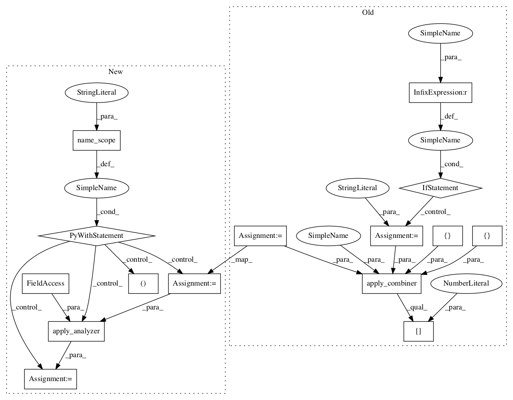

54e07bdb2ba299fd6f364289510612f2fe6af8ff,tensorflow_transform/analyzers.py,,covariance,#Any#Any#Any#,1352

Before Change
x.shape.assert_has_rank(2)
input_dim = x.shape.as_list()[1]
shape = (input_dim, input_dim)
combiner = CovarianceCombiner(dtype.as_numpy_dtype)
if name is None:
name = "covariance"
return apply_combiner([x], [dtype], [shape], combiner, name)[0]
class PCACombiner(CovarianceCombiner):
Compute PCA of accumulated data using the biased covariance matrix.
After Change
if not isinstance(x, tf.Tensor):
raise TypeError("Expected a Tensor, but got %r" % x)
with tf.name_scope(name, "covariance"):
x.shape.assert_has_rank(2)
input_dim = x.shape.as_list()[1]
shape = (input_dim, input_dim)
(result,) = apply_analyzer(
analyzer_nodes.Combine,
x,
combiner=CovarianceCombiner(dtype.as_numpy_dtype, shape))
return result
class PCACombiner(CovarianceCombiner):
Compute PCA of accumulated data using the biased covariance matrix.
def __init__(self, output_dim=None, numpy_dtype=np.float64,
In pattern: SUPERPATTERN
Frequency: 3
Non-data size: 15
Instances
Project Name: tensorflow/transform
Commit Name: 54e07bdb2ba299fd6f364289510612f2fe6af8ff
Time:
Author: null
File Name: tensorflow_transform/analyzers.py
Class Name:
Method Name: covariance
Project Name: tensorflow/transform
Commit Name: 54e07bdb2ba299fd6f364289510612f2fe6af8ff
Time:
Author: null
File Name: tensorflow_transform/analyzers.py
Class Name:
Method Name: covariance
Project Name: tensorflow/transform
Commit Name: 54e07bdb2ba299fd6f364289510612f2fe6af8ff
Time:
Author: null
File Name: tensorflow_transform/analyzers.py
Class Name:
Method Name: quantiles
Project Name: tensorflow/transform
Commit Name: 54e07bdb2ba299fd6f364289510612f2fe6af8ff
Time:
Author: null
File Name: tensorflow_transform/analyzers.py
Class Name:
Method Name: pca